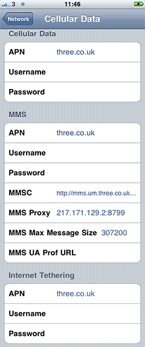

My contract finished with O2 many months ago, I patiently waited for the release of the iPhone 4 … June 24th came and went, and to cut a long story short, I stuck with my iPhone 3G and (last week) switched to Three.
If you’re running iOS4 on your iPhone, save yourself some time and stop reading now – this only applies for iOS 3.x.
Their SIM only iPhone plan is a mere £15 a month for 1GB of data, 300 minutes and unlimited texts – what more could you ask for? Well 3G coverage is probably the first thing.
I downgraded my iPhone 3G due to abysmal performance of iOS4 (yes, Apple have an update due to ship any day now). While on holiday in June, I recall several moments where I almost threw my phone across the street, while waiting for it to give me directions!
While iOS3 restores the performance on your iPhone 3G, the only official iPhone carrier in the UK it recognises is O2. If you check your cellular data settings on Three, you’ll see they’re blank. For me, this meant sporadic 3G coverage, and little or no 3G coverage in places where I’d previously received it on O2.
However, we can improve this by manually specifying the APN settings in the iPhone (and not only for 3G but MMS and tethering too!).
If you’d care to glance to your right, you’ll see the relevant Three settings (the MMSC field should read http://mms.um.three.co.uk:10021/mmsc).
You can reach this screen by going to Settings > General > Network > Cellular Data Network. Credit goes to this forum post.
Before migrating from O2 to another network, especially Three, consider these issues:
- No visual voicemail – you have to dial into your voicemail and play them in sequence (clumsy!)
- Call Forwarding Active – Annoying! This message is displayed for EVERY outbound call.
- Coverage – yes the rumours are true, I get coverage where I wouldn’t expect, and none where I need it (and used to get it on O2).
 I’m still evaluating Three but I’m beginning to suspect Three stands for 3 bars (of coverage), not 3G!
I’m still evaluating Three but I’m beginning to suspect Three stands for 3 bars (of coverage), not 3G!
Update (16th Sept 2010):
I’m making the switch back to O2 at the end of this month. After a day in the office with minimal signal, I have to reset my iPhone at least once a week due to it not recognising there is a 3G signal available on the way home. I never experienced this prior to moving to Three.
Coverage is the main issue though, I’ve never had to rely on my voicemail so much!
Tweet
comments
No comments for this post.